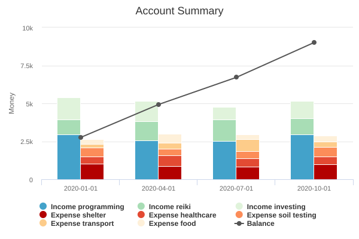

mustaching 3.1.3 Documentation¶
Introduction¶
A tiny Python 3.6+ library inspired by Mr. Money Mustache to summarize and plot personal finance data given in a CSV file of transactions. Uses Pandas and Python-Highcharts to do most of the work.
{kind=link}

Smacks of plain text accounting but is limited to single-entry transactions and focuses only on income and expenses. For full-featured double-entry bookkeeping in Python, use a different library, such as beancount.
Installation¶
pip install mustaching
Usage¶
Play with the IPython notebook at ipynb/examples.ipynb.
You can even do so online by clicking the Binder badge above.
Using Binder you can also upload your own transaction data into the notebook, but consider first Binder’s warning about private data.
Your CSV of transactions should contain at least the following columns
'date': string; something consistent and recognizable by Pandas, e.g 2016-11-26'amount': float; amount of transaction; positive or negative, indicating an income or expense, respectively'description'(optional): string; description of transaction, e.g. ‘dandelion and burdock tea’'category'(optional): string; categorization of description, e.g. ‘healthcare’'comment'(optional): string; comment on transaction, e.g. ‘a gram of prevention is worth 16 grams of cure’
The business logic can be found in mustaching/main.py
Documentation¶
Notes¶
Development status: Alpha
This project uses semantic versioning
Authors¶
Alex Raichev, 2016-11
API¶
mustaching.main module¶
- CONVENTIONS:
- A DataFrame of transactions is one with the following columns:
date: Numpy datetime
amount: float
description (optional): string
category (optional): Pandas ‘category’
comment (optional): string
-
mustaching.main.create_transactions(date1, date2, freq='12H', income_categories=None, expense_categories=None)¶ Create a DataFrame of sample transactions between the given dates (date strings that Pandas can interpret, such as YYYYMMDD) and at the given Pandas frequency. Include all the columns in the set
COLUMNS. Each positive transaction will be assigned a income category from the given listincome_categories, and each negative transaction will be assigned a expense category from the given listexpense_categories. If these lists are not given, then whimsical default ones will be created.
-
mustaching.main.get_colors(column_name, n)¶ Return a list of
n(positive integer) nice RGB color strings to use for color coding the given column (string; one of['income', 'expense', 'period_budget', 'balance'].NOTES:
Returns at most 6 distinct colors. Repeats color beyond that.
Helper function for
plot().
-
mustaching.main.insert_repeating(transactions, amount, freq, description=None, category=None, comment=None, start_date=None, end_date=None)¶ Given a DataFrame of transactions, add to it a repeating transaction at the given frequency for the given amount with the given optional description, category, and comment. Restrict the repeating transaction to the given start and end dates (date objects), inclusive, if given; otherwise repeat from the first transaction date to the last. Drop duplicate rows and return the resulting DataFrame.
-
mustaching.main.plot(summary, currency=None, width=None, height=None)¶ Given a transaction summary of the form output by
summarize(), plot it using Python HighCharts. Include the given currency units (string; e.g. ‘NZD’) in the y-axis label. Override the default chart width and height, if desired.
-
mustaching.main.read_transactions(path, date_format=None, **kwargs)¶ Read a CSV file of transactions located at the given path (string or Path object), parse the date and category, and return the resulting DataFrame.
The CSV should contain at least the following columns
'date': string'amount': float; amount of transaction; positive or negative, indicating a income or expense, respectively'description'(optional): string; description of transaction, e.g. ‘dandelion and burdock tea’'category'(optional): string; categorization of description, e.g. ‘healthcare’'comment'(optional): string; comment on transaction, e.g. ‘a gram of prevention is worth 62.5 grams of cure’
If the date format string
date_formatis given, e.g'%Y-%m-%d', then parse dates using that format; otherwise use let Pandas guess the date format.
-
mustaching.main.summarize(transactions, freq=None, by_category=False, decimals=2, start_date=None, end_date=None)¶ Given a DataFrame of transactions, slice it from the given start date to and including the given end date date (strings that Pandas can interpret, such as YYYYMMDD) if specified, and return a DataFrame with the columns:
'date': start date of period'category'(if by_category): transaction category'amount': amount for the period and category'balance': cumulative sum of income - expense'savings_pc_for_period': 100*(income sum - expense sum)/(income sum)'spending_pc_for_period': 100*expense/(income sum)'spending_pc_for_period_and_category'(if by_category): 100*expense/(income sum)'income_pc_for_period_and_category'(if by_category): 100*income/(income sum)'expense_pc_for_period_and_category'(if by_category): 100*expense/(expense sum)'daily_avg'(if freq is None): income - expense divided by number of days between start and end date'weekly_avg'(if freq is None): income - expense divided by number of weeks between start and end date'monthly_avg'(if freq is None): income - expense divided by number of months (possibly fractional) between start and end date'yearly_avg'(if freq is None): income - expense divided by number of years (possibly fractional) between start and end date
The period is given by the Pandas frequency string
freq. If that frequency isNone, then there is only one period, namely one that runs from the first to the last date intransactions(ordered chronologically); the'date'value is then the first date.If
by_category, then group by the'category'column oftransactionsin addition to the period.Round all values to the given number of decimals.
-
mustaching.main.validate_transactions(transactions: pandas.core.frame.DataFrame) → pandas.core.frame.DataFrame¶ Raise a Pandera SchemaError if the given DataFrame of transactions does not agree with the schema :const:SCHEMA. Otherwise, return the DataFrame as is.